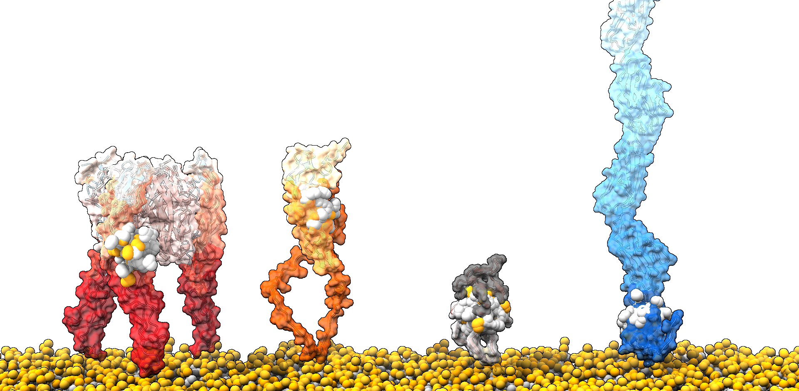
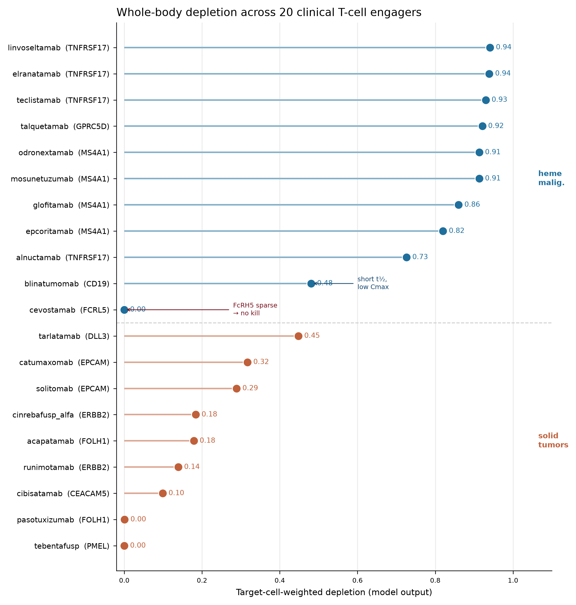

A complete antibody-discovery campaign — from target nomination to an interface-confirmed de novo binder — run in one week by one scientist directing Claude across every discipline it normally takes a multidisciplinary team to cover.
CD3 T-cell engagers activate CD4⁺ cells as well as CD8⁺ killers, and adding a costimulatory arm amplifies whatever those CD4 cells do — driving cytokine-release syndrome (CRS) and Treg expansion. We asked which costim receptor boosts CD8 effector killing without feeding the CD4 toxicity programs. Using a genome-scale CD4⁺ Perturb-seq map as a counter-screen, we scored all eleven panel receptors on one benefit axis (CD8 effector) and five CD4 liability axes (CRS, suppression, help-erosion, proliferation, exhaustion). A strict liability veto collapses the panel to two clean co-leads — 4-1BB (TNFRSF9) and CD27 — and rejects CD28, the strongest effector arm, on CRS + suppression + proliferation. A genome-wide scan re-derives the same pair; a 1.65-million-edge regulatory network explains why 4-1BB is clean; a whole-body PBPK-QSP model converts the axes into a predicted therapeutic window; and a completed AlphaFold-3 campaign delivers interface-confirmed de novo binders for both co-leads. Every number was attacked by a six-front adversarial audit — which caught the pipeline’s own most impressive result and forced its retraction.
CD3-based T-cell engagers deliver T-cell "signal 1" without costimulatory "signal 2," so the recruited T cell activates transiently and drifts toward exhaustion. Adding a costimulatory arm restores signal 2 but, because the engaging arm is anti-CD3 and therefore engages CD4⁺ T cells indiscriminately, it amplifies whatever program those CD4 cells run — seeding cytokine-release syndrome (CRS), expanding regulatory T cells (Tregs), and, for some receptors, driving subset-independent toxicity. We reframe the problem: the enemy is not the CD4 lineage but a specific CD4 sub-program — the Treg-suppressive plus high-cytokine wiring — and CD4 help is beneficial. We use the Marson/Pritchard genome-scale CD4⁺ CRISPRi Perturb-seq as a toxicity counter-screen, scoring every candidate costimulatory receptor on three axes: CD8 effector benefit (anchored on the Schmidt gain-of-function CRISPRa data), suppression liability, and CRS liability. Under a liability-veto nomination rule, exactly two of eleven costimulatory arms are clean — 4-1BB (TNFRSF9) and CD27 — while CD28, which carries the single highest effector score in the panel, is decisively gated out on CRS+suppression+ proliferation liabilities, recapitulating the TGN1412 experience in silico. We translate the three axes into a gene-regulatory-network drive operator for a quantitative-systems-pharmacology (QSP) model, and we carry the two clean co-leads (plus the CD3 redirector and a CEACAM5 tumor antigen) into a de novo binder-design campaign (RFdiffusion → ProteinMPNN → AlphaFold3) that yields interface-confirmed, bench-ready binders at agonist-compatible epitopes.
The finding (Impact). A reproducible, genome-scale method that separates the CD8-effector benefit of a costimulatory arm from its CD4 suppressive/CRS liability, and a defensible nomination — 4-1BB + CD27 — that maximizes effector benefit while feeding neither toxicity program. The method is transferable to any costimulatory-receptor panel and any single-cell perturbation atlas; the nomination is directly actionable for costim-bispecific programs. This is a finding others can build on, not a one-off result.
How it was built (Claude use). The entire pipeline — genome-scale Perturb-seq differential-expression scoring, a 1.65-million-edge gene-regulatory network, the liability-veto nomination, a GRN→QSP drive operator, and a full de novo binder-design campaign (3,964 AlphaFold3 folds across cloud GPUs) — was executed as a set of orchestrated agent lanes, each grounding every load-bearing number against a deposited artifact and carrying its own verification ledger. The breadth (target ID → screening → mechanism → QSP → protein design) on a single screen, with per-number provenance, is the depth signal.
What was wrestled with (Depth & Execution). The nomination survived repeated correction: a resting-expression ranking artifact ("CD2 wins") was caught and rejected; the liability gate was hardened to a veto after a composite-score reordering was found to resurrect CD28; multiple auditor passes reconciled every headline number to its source file. Honest limitations are stated throughout (CRISPRi is loss-of-function; the hero screen is single-target; the QSP's resting-receptor-density assumption).
What you can run and watch (Demo). A reproduction notebook re-derives every number in the analysis (36/36 checks pass end-to-end from deposited artifacts), and a four-arm molecular-diffusion animation shows the designed binders folding onto their epitopes. Findings you can trust, and something genuinely cool to watch.
The nomination at a glance: of 11 costimulatory arms, 4-1BB (TNFRSF9) and CD27 are the only two that clear the six-axis liability veto. CD28 (top effector, z=12.11) is gated on CRS+SUPP+PROLIF. The two co-leads are CD8-biased by different measures — CD27 by receptor expression selectivity, 4-1BB by effector-network wiring (net +54.4, ≈19× CD8:CD4).
CD3-based T-cell engagers (TCEs) recruit polyclonal T cells to a tumor antigen by delivering T-cell-receptor "signal 1" in the absence of a costimulatory "signal 2." T cells activated through signal 1 alone activate transiently, fail to sustain proliferation, and drift toward exhaustion, which bounds the depth and durability of the redirected response. The field's response is to add a costimulatory arm — most commonly CD28 or 4-1BB (TNFRSF9) — and tumor-targeted costimulatory bispecifics are now advanced in preclinical and clinical development.
The unsolved problem is toxicity, and its origin is structural rather than incidental. Because the engaging arm is anti-CD3, an antigen present on all T cells, the molecule cannot avoid engaging CD4⁺ T cells; a costimulatory arm then amplifies whatever program those CD4 cells run. Three mechanisms translate that engagement into harm, and they do not share a single point of control:
The central premise of this work follows from that decomposition. The enemy is not the CD4 lineage but a specific CD4 sub-program — the Treg-suppressive plus high-cytokine wiring. CD4 help is beneficial: it licenses dendritic cells, sustains CD8 cytotoxic differentiation and memory, and CD4 cells can act as direct effectors in some tumors (Borst et al. 2018, Nat. Rev. Immunol., doi:10.1038/s41577-018-0044-0; PMID 30057419). A design that deletes or blocks CD4 help would forfeit that benefit; the goal is to spare the help-and-effector wiring while starving the suppressive-and-cytokine wiring. Of the three toxicity origins, only Treg expansion is soluble at the receptor layer; CRS breadth is magnitude-driven and myeloid-amplified, and costimulation-intrinsic toxicity is subset-independent. Receptor selection therefore addresses roughly one-third of the toxicity problem directly and de-risks a second third (CRS wiring) — the residual (magnitude control, coincidence-gated delivery) is left to the delivery format and to the downstream quantitative model, and is out of scope here.
The apparent paradox — using a CD4 screen to nominate a costimulatory arm whose therapeutic payload is CD8 killing — resolves once the screen is read as a toxicity counter-screen rather than an effector screen. The suppressive and cytokine-release programs that gate costim-engager toxicity are precisely the programs a CD4⁺ compartment expresses and resolves. CD4 is the one compartment in which effector/help wiring can be separated from suppressive/cytokine-release wiring at single-cell, genome-scale resolution.
The anchor dataset is the Marson/Pritchard genome-scale CD4⁺ CRISPRi Perturb-seq screen (Zhu et al. 2025, bioRxiv, doi:10.64898/2025.12.23.696273), which perturbs 11,526 regulators, reads out 10,282 genes, and resolves three activation timepoints. It scores each regulator's effect on the IL-10/Treg-suppressive program and across the storm-cytokine set (TNF, IL-2, IFN-γ), making it a direct map of the two receptor-soluble liability programs. Two orthogonal screens complete the instrument: the Marson-lab CD8 CRISPRa/CRISPRi Perturb-seq (Schmidt et al. 2022, Science, doi:10.1126/science.abj4008), whose gain-of-function CRISPRa arm sorted on IFN-γ in CD8⁺ cells and directly identified costimulatory TNF-receptor-superfamily members that raise IFN-γ when overexpressed; and the SLICE genome-wide CRISPR screen with a cancer-cell-killing readout (Shifrut et al. 2018, Cell, doi:10.1016/j.cell.2018.10.024).
An honest scope note is load-bearing here. CRISPRi is loss-of-function, whereas an engager costimulatory arm is gain-of-function, so no knockdown screen can prove that agonizing a receptor helps. The screens supply a validated, directional state change per receptor; the direction of benefit is anchored on the Schmidt CRISPRa gain-of-function data, and translation of the validated state change into a predicted efficacy and therapeutic window is reserved for the quantitative-systems-pharmacology (QSP) layer downstream of this section.
Each candidate costimulatory receptor is scored on three axes:
E_schmidt_z), the gain-of-function evidence a CD4 CRISPRi knockdown screen structurally cannot supply.The nomination rule is a liability veto, not a trade-off. A receptor is scored on a six-axis liability gate — CRS, SUPP, HELP-erosion, PROLIF (cell-cycle), and EXH (exhaustion), plus a data-driven suppression axis (DD_SUPP) that adds no independent gate call — and any liability-up axis eliminates the arm. Effector benefit never offsets a liability: a high effector score cannot rescue a receptor that feeds suppression, CRS, help-erosion, uncontrolled proliferation, or exhaustion. This ordering is deliberate. Reading a composite "therapeutic-window" rank without applying the veto first reorders hard-gated arms above the clean survivors and resurrects a "CD28-looks-acceptable" artifact; the gate is therefore applied first, and only the clean survivors are ranked on effector benefit.
Applying the veto to the scored panel of 11 costimulatory receptors leaves exactly two clean arms — 4-1BB (TNFRSF9) and CD27 — and they are the co-leads. The table below is the full effector-ranked panel with the canonical gate status for each arm (values from COSTIM_FINAL_3AXIS_SCORE_v7.csv).
| Rank | Arm | Gene | Effector z (E_schmidt_z) | Gate status |
|---|---|---|---|---|
| 1 | CD28 | CD28 | 12.11 | GATED [CRS, SUPP, PROLIF] |
| 2 | CD27 | CD27 | 4.28 | CLEAN |
| 3 | 4-1BB | TNFRSF9 | 3.74 | CLEAN |
| 4 | CD30 | TNFRSF8 | 3.22 | GATED [HELP, PROLIF] |
| 5 | CD40 | CD40 | 2.65 | GATED [HELP, PROLIF] |
| 6 | OX40 | TNFRSF4 | 2.07 | GATED [SUPP, EXH] |
| 7 | DR3 | TNFRSF25 | 1.58 | GATED [SUPP, EXH] |
| 8 | DNAM1 | CD226 | 0.64 | GATED [SUPP, EXH] |
| 9 | GITR | TNFRSF18 | 0.09 | GATED [SUPP] |
| 10 | HVEM | TNFRSF14 | 0.02 | GATED [SUPP, EXH] |
| 11 | ICOS | ICOS | −0.39 | GATED [HELP, PROLIF] |
The single most informative row is CD28. It carries the top effector score in the entire panel (E_schmidt_z = 12.11) and is nonetheless gated out on three liabilities (CRS, SUPP, PROLIF). This is the clearest demonstration that the counter-screen — not the effector axis — drives the nomination: the arm that would win any effector-only ranking is the arm the toxicity gate most decisively rejects, consistent with the TGN1412 experience with CD28 superagonism.
The two clean co-leads are effector-beneficial and, on complementary measures, actively CD8-biased rather than merely liability-neutral:
A34_expression_selectivity_CD8vsCD4.csv). Its CD4 wiring is suppression-negating (SUPP down, BH-q = 6.3×10⁻⁵), i.e. it reads as anti-suppressive in the CD4 compartment, and it is help-spared.A29_network_effector_selectivity.csv). Both co-leads also pass the data-driven suppression axis (DD_SUPP BH-q: 4-1BB 0.79, CD27 0.42), which raises no independent gate call.The two arms are CD8-biased by different measures — CD27 by where it is expressed, 4-1BB by how its network is wired — so the positive criterion is stronger than cleanliness alone: the costimulatory boost is directed onto the killers rather than merely kept off the brakes. Each carries a residual liability that is out of the CD4 screen's field of view and is handed to the downstream model: 4-1BB agonism drives CD8/NK bystander proliferation and liver-myeloid hepatotoxicity (the urelumab class), and CD27 is CRS-capped at monotherapy-equivalent dose in the network read. The nomination that these axes hand forward is therefore a liability-clean co-lead pair, 4-1BB + CD27, to be dose- and window-characterized by the QSP layer and to be pursued at agonist-compatible epitopes by the binder-design track.
The costim arm's danger is CD4-intrinsic. An anti-CD3 engaging arm is present on every T cell, so a co-administered costimulatory arm cannot avoid engaging CD4⁺ cells and then amplifies whatever those cells do. Two CD4 sub-programs convert that unavoidable engagement into dose-limiting harm: the regulatory/IL-10 suppressive program (Tregs are CD4⁺ and express CD28/4-1BB at high levels, so a costim arm risks expanding the immunosuppressive compartment) and the cytokine-release program (CD4 helper cells are disproportionate cytokine producers, so broad CD4 activation seeds the IFN-γ/TNF/IL-2 cascade that myeloid cells amplify into cytokine-release syndrome, CRS). The clinical anchor for the CRS axis is TGN1412: a CD28 superagonist monoclonal antibody that, within 90 minutes of a single intravenous dose, drove a systemic proinflammatory cytokine-release response with progression to multi-organ (pulmonary, renal) failure in all six healthy volunteers of its first-in-human trial — all six survived after intensive support (Suntharalingam et al., N Engl J Med 2006;355(10):1018–28, PMID 16908486, doi:10.1056/NEJMoa063842). Subsequent mechanistic work localized the driver to CD28-superagonist stimulation of CD4⁺ effector-memory T cells. The enemy is therefore not the CD4 lineage but a specific CD4 sub-program — Treg-suppressive plus high-cytokine wiring — and the genome-scale CD4⁺ CRISPRi Perturb-seq map (Zhu et al., "Genome-scale perturb-seq in primary human CD4+ T cells maps context-specific regulators of T cell programs and human immune traits," bioRxiv, posted 24 Dec 2025, doi:10.64898/2025.12.23.696273; 11,526 regulators × 10,282 genes × 3 timepoints) is the one instrument that resolves exactly these two programs at the resolution of individual regulators. This section scores each candidate costim receptor's CD4 knockdown wiring on both liability axes and reports the per-axis veto calls that gate the panel.
Program gene sets. Each liability axis is a curated gene set scored against the Stim48hr differential-expression layer (program_gene_sets.json). The core suppressive program is 8 genes — FOXP3, IL10, CTLA4, IKZF2, ENTPD1, IL2RA, TGFB1, LRRC32 — spanning the master Treg transcription factor, the suppressive cytokine, the checkpoint effectors, and the ectoenzyme/adhesion machinery of contact-dependent suppression. The CRS axis is the storm-cytokine set TNF, IL2, IFNG, IL6. (IL6 is the myeloid-amplified downstream signal and is carried on the panel CRS axis; the genome-wide scan in §2.5 uses the three T-cell-intrinsic storm cytokines TNF/IL2/IFNG that a CD4 knockdown reads directly.)
Agonism-direction inference. The hero screen is CRISPRi — a loss-of-function perturbation — whereas an engager costim arm is a gain-of-function agonist. The two cannot be equated naively. For each receptor and each program the agonism-direction effect is therefore taken as −1 × the measured knockdown effect (within-donor Cliff's delta), combined across the gene set by Stouffer's method and BH-FDR-corrected across the 11-receptor panel (A2_nomination_Stim48hr_3axis, deepen_2donor.py). A receptor whose knockdown lowers a program has agonism that raises it. Calls are made at BH q < 0.05 in the veto direction (up/down), else ns; a *conc suffix marks sign-concordance across both donors (HELP concordance is identical to the single-cell sc_HELP reading).
Veto logic. An arm is GATED if it fires any liability axis: CRS-up (agonism feeds the storm), SUPP-up (agonism feeds Treg/IL-10 suppression), HELP-down (agonism erodes beneficial CD4 help), plus PROLIF-up and EXH-driving from the companion proliferation/exhaustion axes. CLEAN requires zero vetoes across all five. The gate_status column is computed from the per-axis calls, not hardcoded; recomputing the veto union from the raw CRS/SUPP/HELP/PROLIF/EXH calls reproduces the deposited gate_status for all 11 receptors exactly (verification ledger claim A31-FIX). The sign convention is deliberately conservative: a knockdown screen cannot prove agonism helps, so an axis is read as a liability only when the state change is significant and in the harmful direction.
The panel splits cleanly on the two toxicity axes. The table below carries the CD8 effector-benefit z (Schmidt et al. CRISPRa IFN-γ anchor, scored in the effector-axis section) only as context for why the strongest effector arm is nonetheless eliminated here.
| Receptor | CD8 effector z | CRS call | SUPP call (agon, q) | HELP call | Gate |
|---|---|---|---|---|---|
| CD28 | 12.11 | up (0.121, q=1.1×10⁻⁵) | up (0.152, q=5.9×10⁻⁹) | up | GATED[CRS,SUPP,PROLIF] |
| CD27 | 4.28 | ns | down·conc (−0.082, q=6.3×10⁻⁵) | up | CLEAN |
| 4-1BB (TNFRSF9) | 3.74 | ns (−0.053, q=0.12) | ns (−0.037, q=0.13) | up | CLEAN |
| CD30 | 3.22 | ns | down·conc (−0.202, q=4.9×10⁻¹⁷) | down | GATED[HELP,PROLIF] |
| CD40 | 2.65 | ns | down (−0.057, q=3.9×10⁻³) | down·conc | GATED[HELP,PROLIF] |
| OX40 | 2.07 | ns | up (0.139, q=4.6×10⁻⁹) | up | GATED[SUPP,EXH] |
| DR3 | 1.58 | ns | up (0.089, q=9.2×10⁻⁴) | ns | GATED[SUPP,EXH] |
| DNAM1 (CD226) | 0.64 | ns | up·conc (0.148, q=6.6×10⁻¹⁹) | up | GATED[SUPP,EXH] |
| GITR | 0.09 | ns | up* (0.106, q=6.8×10⁻⁵) | ns | GATED[SUPP] |
| HVEM | 0.02 | ns | up (0.059, q=9.0×10⁻³) | up | GATED[SUPP,EXH] |
| ICOS | −0.39 | down | down·conc (−0.304, q=1.2×10⁻⁴⁰) | down·conc | GATED[HELP,PROLIF] |
The CRS axis is CD28-specific. Among the 11 receptors, only CD28 is CRS-up (agonism-direction Δ = +0.121, q = 1.1×10⁻⁵, donor-concordant). Every TNFRSF member and DNAM1 is CRS-ns; ICOS is CRS-down. The panel-wide storm-cytokine liability is thus carried almost entirely by CD28 — precisely the receptor whose superagonism caused the TGN1412 storm. A 48-hour snapshot could in principle miss an early cytokine spike, so the kinetic axis (A24, genome-wide 8 h vs 48 h) was checked: CD28 spikes early and stays warm (CRS z +2.32 at 8 h → +1.49 at 48 h) whereas 4-1BB only gets colder (−0.76 → −1.62). The CRS-clean call for 4-1BB is not a snapshot artifact.
The suppressive axis is the discriminating axis. Six of eleven arms are SUPP-up — CD28, OX40, GITR, DR3, HVEM, and DNAM1 — meaning their agonism is predicted to feed the Treg/IL-10 program. OX40 (q = 4.6×10⁻⁹) and DNAM1 (q = 6.6×10⁻¹⁹) are the strongest liabilities after CD28. Four arms are SUPP-down (CD27, CD30, ICOS, CD40): their agonism is predicted to reduce suppressive tone. 4-1BB alone is SUPP-ns (q = 0.13) — neither feeding nor opposing the program. Because CRS-up is CD28-specific, it is this suppressive axis, not the cytokine axis, that separates most of the panel — which is exactly what makes the "wrong subset" the right instrument: CD4 is the one compartment where suppressive wiring can be resolved and scored independently of effector and help wiring.
Circularity is handled explicitly. Two SUPP-up calls sit on receptor genes that are themselves members of a scoring set, which would make the call partly self-referential. GITR's SUPP-up is circular because TNFRSF18 (GITR) is contained in the expanded 15-gene SUPP_full set used for the deposited SUPP score; on leave-one-out it collapses from z 1.96 to 0.67 (ns), so GITR is clean-on-LOO — but its effector z is 0.09, so it is not a lead regardless. CD28 carries an analogous self-membership flag on the data-driven suppression axis (DD_SUPP), which flips to ns on leave-one-out; CD28 is nonetheless eliminated on the curated CRS + SUPP + PROLIF vetoes independent of DD_SUPP. A data-driven suppression axis (DD_SUPP) was evaluated as a candidate sixth liability axis and retracted as a gate: it adds zero independent veto calls (0 arms are gated by DD_SUPP alone; all four DD_SUPP-up arms — CD28, DNAM1, OX40, GITR — are already SUPP-gated), and both co-leads are DD_SUPP-ns (4-1BB q = 0.79, CD27 q = 0.42). An earlier prose figure of ρ = 0.84 attributed to the DD_SUPP↔SUPP relationship was a mis-carried value from the EXH–SUPP comparison and has been retracted (ledger claim A31b-fix).
The gate leaves exactly two receptors standing (CLEAN), and they clear the liability axes by two different routes:
ns, SUPP-ns, HELP-up (agonism preserves help, +0.065, q = 0.012), PROLIF-ns, and exhaustion-flat. Its agonism is predicted to touch neither the storm nor the suppressive program while sparing beneficial CD4 help.ns, SUPP-down·conc (−0.082, q = 6.3×10⁻⁵), HELP-up (+0.052, q = 0.012), PROLIF-ns, and exhaustion-negating (favorable). Its agonism is predicted to lower suppressive tone rather than merely avoid raising it.Every other arm is vetoed on a liability axis: CD28 on CRS + SUPP + PROLIF; OX40, DR3, HVEM, and DNAM1 on SUPP (with an exhaustion-driving co-veto); GITR on SUPP; CD30 and CD40 on HELP + PROLIF; ICOS on HELP + PROLIF. Notably, the arm with by far the strongest CD8 effector-benefit signal, CD28 (z = 12.11), is eliminated by the counter-screen — the toxicity axes, not the effector axis, decide the nomination, which is the point of running the counter-screen at all.
The counter-screen also enables a second, orthogonal deliverable. Because the hero screen is CRISPRi, the effect of knocking down every regulator on the storm-core cytokines (TNF/IL2/IFNG) is directly measured. Regulators whose knockdown lowers the storm are candidate intracellular CRS safety-valve co-targets — a knockout / base-edit in the cell product, or a small-molecule co-drug — a safety modality entirely orthogonal to the choice of costim arm.
Method. For each regulator, storm_lfc = mean log-fold-change over [TNF, IL2, IFNG] under knockdown, and storm_suppress_z = z-scored (−storm_lfc) across regulators; higher = knockdown more strongly lowers the storm. This is the direct knockdown reading matching the KO/base-edit modality, so no agonism sign-flip is applied (unlike the costim-arm axis in §2.2). The measurement reproduces the panel CRS axis at Spearman ρ = 1.000 (n = 9,314) — confirmed on the deposited file — i.e. it is the same CRS quantity read in the knockout direction. Of 11,281 regulators at Stim48hr, 7,195 have reliable on-target knockdown, and 87 pass the clean safety-valve filter (reliable · storm z ≥ 2 · not broadly essential · not a curated usual-suspect · effector z < 1.5).
The scan recovers known biology. The strongest storm suppressors are the canonical TCR-proximal and CBM/NF-κB/NFAT signaling nodes — LCP2, CARD11 (z = 4.21), VAV1, LCK, CHUK, PLCG1, CD3D/CD3G — exactly the regulators whose loss should collapse the activation cascade. Storm suppression and CD8 effector requirement are essentially decoupled genome-wide (Spearman ρ = 0.005 on the reliable set), yet the strongest signaling hits carry an effector cost — CARD11 has a CD8 effector z of −2.11, and VAV1/TBX21 suppress the storm but are strong effector drivers (z = +12.5 / +6.03), making them poor co-targets. The clean filter therefore explicitly excludes effector-costly and broadly-essential nodes, leaving effector-sparing, non-obvious candidates. The top-ranked presentable safety valves are UVSSA (z = 4.44, reliable-rank 3), PGAM1 (z = 3.61), ZNF71 (z = 3.27), SLC38A6 (z = 3.18), and RAD51D (z = 3.14) — all specific/non-obvious, intracellular, and effector-sparing.
As an internal-consistency check, the costim receptors themselves are not storm drivers when read as regulators: 4-1BB (TNFRSF9) has storm_suppress_z = −1.62 (reliable-rank 6,844 of 7,195), i.e. its knockdown, if anything, slightly raises the storm — consistent with 4-1BB not feeding the CD4 storm program from either direction. These 87 candidates are presented as a co-target hypothesis list, not validated targets: the readout is a transcriptional CRS surrogate rather than a signaling-flux model, and the storm suppressors are CD4-side while their effector cost is scored CD8-side (Schmidt) across axes.
Three boundaries are stated explicitly, because they define what this counter-screen does and does not license.
Bottom line. On the two toxicity axes the CD4 counter-screen was built to resolve, the panel separates decisively: CRS liability is CD28-specific, suppressive liability is the discriminating axis, and only 4-1BB (liability-null) and CD27 (actively anti-suppressive) clear both while preserving CD4 help. The same knockdown screen additionally nominates 87 effector-sparing intracellular CRS safety-valve co-targets as an orthogonal safety modality.
The counter-screen (Sections 1–2) establishes which candidate costimulatory arms are quiet on the CD4⁺ suppressive (Treg/IL-10) and cytokine-release (CRS) programs. That is a necessary but not sufficient condition for a nomination: an arm that is liability-clean but does nothing for CD8⁺ effector function is not worth building. This section supplies the positive axis — evidence that agonizing the receptor enhances CD8⁺ effector output — and confirms that the two liability-clean co-leads, 4‑1BB (TNFRSF9) and CD27, are wired and expressed selectively toward the CD8⁺ effector compartment rather than the CD4⁺ subsets a CD3-engaging arm would co-recruit.
The hero CD4⁺ Perturb-seq map (Zhu et al., 2025) is a CRISPR interference (loss-of-function) screen. Knocking a gene down reports whether it is required for a program under the screen conditions; it cannot report whether over-expressing or agonizing the receptor would push the effector program. A therapeutic costim arm is a gain-of-function agonist, so the direction the engager will drive is structurally invisible to a knockdown screen. The agonism-direction evidence must come from a matched gain-of-function readout.
We anchor that axis on Schmidt et al., 2022 (Science, DOI 10.1126/science.abj4008), the Marson-lab genome-scale CRISPR-activation (CRISPRa) and CRISPRi platform in primary human T cells, which sorted CD8⁺ cells on IFN‑γ production. The anchor is uniquely fit for purpose because its CRISPRa arm made exactly the gain-of-function observation a CD4 CRISPRi screen cannot: CRISPRa "selectively detected a set of tumor necrosis factor superfamily receptors … including 4‑1BB, CD27, CD40, and OX40" that "were not individually required for signaling … but could promote IFN‑γ when overexpressed." That is the agonism-direction signal — a costim receptor whose effect appears on overexpression and is silent on knockdown — read directly from primary human CD8⁺ T cells.
We score each of the 11 candidate arms by its Schmidt CD8 CRISPRa IFN‑γ activation z (Figure 3a, x-axis). The ordering is:
| Arm | Effector z (Schmidt CD8 CRISPRa) | Status |
|---|---|---|
| CD28 | 12.11 | GATED [CRS, SUPP, PROLIF] |
| CD27 | 4.28 | CLEAN — co-lead |
| 4‑1BB (TNFRSF9) | 3.74 | CLEAN — co-lead |
| CD30 | 3.22 | gated |
| CD40 | 2.65 | gated |
| OX40 | 2.07 | gated |
| DR3 | 1.58 | gated |
| DNAM1 | 0.64 | gated |
| GITR | 0.09 | gated |
| HVEM | 0.02 | gated |
| ICOS | −0.39 | gated |
CD28 is the strongest effector hit by a wide margin (z = 12.11), but it is vetoed on every liability axis (Section 2) — the same biology that makes CD28 a potent activator makes it the CRS and Treg-expansion hazard that the CD28 superagonist TGN1412 realized clinically, causing near-fatal cytokine-release syndrome in six healthy volunteers (Suntharalingam et al., 2006, NEJM, DOI 10.1056/NEJMoa063842). Among the liability-clean arms, CD27 and 4‑1BB are the two highest effector scores (z = 4.28 and 3.74), sitting immediately below CD28 and above every other candidate. The nomination therefore recovers near-CD28-level effector benefit while discarding the CD28 liability profile.
Effector z scores the receptor's own IFN‑γ effect. To ask whether the receptor sits upstream of the killing program and does so selectively in CD8⁺ cells, we scored network topology (A29): the summed signed regulatory importance (GRNBoost2) flowing from each receptor onto the CD8 cytotoxic-effector target set (GZMB, PRF1, IFNG and related genes) in a CD8-gain-of-function gene-regulatory network minus the same quantity in a CD4-gain-of-function network. The signed difference, net effector selectivity, is positive when the receptor drives the cytotoxic program more strongly in CD8⁺ than in CD4⁺ cells (Figure 3b).
4‑1BB is the dominant CD8-selective effector hub: net effector selectivity = +54.4, the largest of any arm and far above the next candidate (ICOS, +8.3). Its raw drive onto the cytotoxic-effector targets is ~19-fold higher in CD8⁺ than in CD4⁺ cells (57.4 vs 3.04), and its overall effector-hub connectivity is likewise CD8-weighted (net hub selectivity +155.0; CD8 hub strength 173.1 vs CD4 18.0). This is network-topology evidence, independent of the per-cell expression and per-gene effector axes, that 4‑1BB agonism lands on the CD8 killing program specifically.
CD27 behaves differently and instructively: its net effector selectivity is +0.49 — essentially neutral — and its overall hub connectivity is actually CD4-weighted (net hub selectivity −59.0). CD27 is therefore not a network-level CD8-selective effector hub; its subset selectivity is carried by the expression axis (Section 3.5), not the network. The two co-leads are thus selective by complementary and non-redundant mechanisms — 4‑1BB through effector-network topology, CD27 through compartment-restricted expression — which makes the joint nomination robust to the failure of any single axis. (CD27's CD4-side network connectivity was screened against the suppressive/CRS programs in Section 2 and cleared; it is not re-litigated here.)
We cross-checked the anchor against a second, independent gain-of-function readout and against the loss-of-function frame (A30). Each arm was placed in a 2×2 on an effector axis (CD8/IFN‑γ) and an activation axis (CD4/IL‑2), scoring a CRISPRa gain-of-function z (GOF) and a CRISPRi loss-of-function "agonism-frame" z (LOF):
A 20,000-draw Monte-Carlo re-check propagated the effector-z uncertainty and stress-tested the co-leads against the gated but effector-competitive challengers (DR3, HVEM, CD40). Under effector confidence alone, the co-leads' joint probability of occupying the top two effector slots is 0.528; weighting by CD8 expression breadth raises it to 0.836, and CD27's probability of the single top slot is 0.74. The main challenger, CD40, is both gated and expression-suppressed (CD8 breadth 9.5%, expression selectivity −0.064), so it churns under effector CI alone but collapses once expression is accounted for. CD27 also carries the tighter effector estimate (z SD = 0.74 vs 2.38 for 4‑1BB), consistent with its higher expression and breadth.
Subset selectivity of a costim arm is only real if the receptor is preferentially expressed or wired on CD8⁺ effectors rather than on the CD4⁺/Treg compartments a CD3 arm co-engages. We confirmed the expression differential in an orthogonal single-cell surface-and-transcript dataset — RTCC CITE-seq (GSE292621, 25,348 cells; gating CD8 = 5,412, CD4-conventional = 3,156, Treg = 2,262). A34 reports the CD8-minus-CD4 expression selectivity (Figure 3a, y-axis):
| Arm | CD8 − CD4conv | CD8 − Treg | CD8 − mean(tox compartments) | CD8 breadth (% positive) |
|---|---|---|---|---|
| CD27 | +0.464 | +0.400 | +0.432 | 84.4% |
| 4‑1BB | +0.038 | +0.104 | +0.071 | 57.5% |
| CD28 | −0.089 | +0.120 | +0.015 | 86.3% |
CD27 is strongly CD8-selective on expression (+0.464 over CD4-conventional, +0.400 over Treg) and broadly expressed on CD8⁺ cells (84.4% positive), the mirror image of its neutral network-effector profile — it is the expression-selective co-lead. 4‑1BB is near-parity on bulk expression (+0.038) but, as Section 3.3 showed, is the network-effector-selective co-lead; its per-compartment levels (CD8 1.04, CD4conv 1.00, Treg 0.93) show a modest CD8/Treg gradient consistent with its inducible-costim biology. CD28 is expression-nonselective, trending CD4-biased (−0.089) — it is expressed across all three compartments at high breadth (86% CD8, 94% CD4conv, 94% Treg), which is the expression correlate of its Treg-expansion and CRS liability. This is the expression-layer confirmation that CD28's problem is not merely functional but distributional: it cannot be engaged CD8-selectively.
The two co-leads are thus selective on different axes — CD27 on expression, 4‑1BB on effector-network topology — with neither showing the pan-compartment distribution that makes CD28 unsuitable. This is the subset-selectivity requirement the whole strategy rests on: a CD3-engaging molecule co-recruits CD4⁺ cells, so a costim arm de-risks toxicity only if its benefit is wired or expressed toward CD8⁺ effectors. Both nominated arms satisfy that condition, by complementary means.
The gain-of-function CD8 anchor supplies the agonism-direction evidence a CD4 CRISPRi counter-screen structurally cannot: among liability-clean arms, CD27 (effector z = 4.28) and 4‑1BB (z = 3.74) are the two strongest CD8 effector hits, recovering near-CD28-level benefit without the CD28 liability profile. Their subset selectivity is confirmed on two independent axes and is non-redundant — 4‑1BB is the dominant CD8-selective effector-network hub (+54.4, ~19× CD8-vs-CD4 drive), CD27 is the CD8-selective on expression (+0.46 over CD4) — and both are quiet on the CD4/IL‑2 activation axis. Nomination robustness holds under Monte-Carlo effector-uncertainty and rises when expression breadth is weighted in (joint top-two probability 0.528 → 0.836). The effector-plus-selectivity axis is consistent with the residual clinical liability of pan-costim agonism — for example the dose-dependent hepatotoxicity of the 4‑1BB agonist urelumab, where significant transaminitis was strongly associated with doses ≥1 mg/kg (Segal et al., 2017, Clin. Cancer Res., DOI 10.1158/1078-0432.CCR-16-1272) — which motivates the tumor-conditional delivery format that layers orthogonally on top of receptor choice (Section 5).
Data sources (verified against artifacts): A29 network effector selectivity; A30 2×2 concordance classification and nomination re-check; A34 expression selectivity (RTCC CITE-seq GSE292621); A21 per-compartment expression breadth. Effector anchor: Schmidt et al., 2022 (Science, 10.1126/science.abj4008). Effector-z estimates are gain-of-function CRISPRa activation z; the Schmidt CD8 IFN‑γ anchor is the primary axis (Section 3.2), cross-checked in A30 against an independent CRISPRa GOF / CRISPRi LOF 2×2 (Section 3.4).
The three-axis nomination (Section 3) scores each costimulatory arm as a set of scalar liability and benefit values. This section derives the mechanism underneath those scalars — a genome-scale gene-regulatory network (GRN) inferred from the hero CD4⁺ CRISPRi Perturb-seq — and converts it into the drive operator the QSP lane consumes: a signed, receptor-anchored propagation kernel that maps each candidate agonism into a magnitude, a program shape, and a timescale for the downstream dynamical model. The section closes on the single mechanistic result that carries the nomination story — the contrast between the CD8-effector and CD4 regulatory rings.
The QSP model outputs themselves (therapeutic-window shifts, dose rationale) are owned by a separate lane and are not reported here; this section defines the operator and hands it off.
The substrate is the Marson/Pritchard genome-scale CD4⁺ T-cell CRISPRi Perturb-seq (Zhu et al. 2025, bioRxiv; dataset used as provided — the underlying accession is a dataset tag, not independently re-verified here). From 278,684 pseudobulk guide×donor×condition profiles we restricted to the Stim48hr sustained-activation state (the state in which costimulatory wiring and the CRS/suppressive programs are engaged) at keep_for_DE=True QC-pass, and collapsed to one expression profile per CRISPRi target — 11,332 per-perturbation profiles × 18,127 genes (CP10K + log1p, Ensembl-ID space). The perturbation-driven variance across knockdowns is precisely the signal GRN inference exploits.
Regulators were the human TF catalogue (Lambert et al. 2018, filtered to is_TF=Yes; 1,569 TFs) unioned with the 12 costimulatory receptors and the program genes, for 1,598 regulators. (The GRN and QSP layers score 12 receptor sources — the 11-arm effector-scored nomination panel of §§1–3 plus CD2, a pan-lineage adhesion/costimulatory receptor carried here as a network source and QSP comparator. CD2 is absent from the §1.4 nomination table because it is CRS-gated and pan-lineage rather than a subset-selective costimulatory candidate; its inclusion as a 12th GRN/QSP arm does not change the clean co-lead set {4-1BB, CD27}.) Edges were inferred with GRNBoost2 (arboreto; per-target stochastic gradient-boosting regression, feature importances = directed regulator→target weights), the gradient-boosting core of the SCENIC pipeline (Moerman et al. 2019, doi:10.1093/bioinformatics/bty916). GRNBoost2 importances are unsigned; each edge was signed by the Pearson correlation of regulator and target across the 11,332 profiles — the CellOracle convention, signed_importance = sign(r) × importance (Kamimoto et al. 2023, doi:10.1038/s41586-022-05688-9).
The backbone is a directed, signed, genome-scale network of 1,653,594 edges over 1,598 regulators × 18,127 target genes (grn_operator_shared_backbone.parquet). Edge correlations span r ∈ [−0.781, +0.944]; unsigned importances reach 44.67; 59.2 % of edges are activating and 40.8 % repressing. This shared backbone is the single regulatory substrate over which every per-arm drive is computed — it is, in the QSP framing, the "CD3-only" wiring of the resting-to-activated CD4 compartment before any costimulatory arm is applied.
Because GRNBoost2 edges are co-expression-derived, we validated them against the independent CRISPRi differential-expression matrix (each receptor's own knockdown signature, Stim48hr). The network passes on all three complementary criteria reported in cd4_grn_methods.md:
69.8 % with AUC > 0.5 (p = 1.7×10⁻¹⁶): a regulator's strongest GRN targets are systematically more perturbed by its own knockdown than random genes.
78.7 % of broad-knockdown regulators (p = 7.6×10⁻¹⁰).
(p = 3.3×10⁻¹⁹⁸).
The strict per-edge validated boolean (adj_p < 0.1 in the DE matrix) marks 8,457 edges (0.51 % of the backbone) and is retained as a conservative floor; the thresholded top-K enrichment — not the all-edge fraction (AUC 0.547, deflated by 18k-gene multiple testing) — is the headline evidence that the inferred edges reflect real causal knockdown effects.
The operator converts each receptor into a signed drive onto four gene programs. Program sets (all present in the backbone) are the effector/cytotoxic set (GZMB, PRF1, GZMK, NKG7, IFNG, GZMA, GNLY, FASLG), the CRS cytokines (TNF, IL2, IFNG), the suppressive/Treg program (FOXP3, IL10, CTLA4, IKZF2, ENTPD1, IL2RA, TGFB1, LRRC32) and the help program (BCL6, MAF, TOX2, CXCR5, TCF7).
For each receptor the drive is computed by signed network propagation from the receptor node through a bounded multi-hop kernel K = I + α·T + α²·T² (α = 0.5) over the regulator subspace, followed by a row-normalized regulator→gene hop. Directionality matters: the propagation represents a +Δ agonism shift on the receptor node — the gain-of-function direction an engager arm acts on. Because the CRISPRi screen is loss-of-function, we apply the LOF→GOF sign flip explicitly (agonism = −1 × knockdown-direction); all reported drive values are on the agonism axis, which is the axis the QSP model consumes. This linear signed-propagation scheme is used as the in-silico-perturbation proxy in place of a trained CellOracle simulation (CellOracle's compiled dependency stack is incompatible with the GRNBoost2 environment here); it is a propagation stand-in for simulate_shift, stated as such, not the trained simulator.
Drive is reported as empirical-null z, where the null is the same-propagation drive of 600 random non-costimulatory regulators, so 0 = backbone-typical (cd4_grn_qsp_drive_full.csv; this is the matrix visualized in the heatmap of Figure 4.1a and consumed by the QSP lane). On this scale, higher CRS-z / suppression-z is more liability and higher help-z is more help preserved. The co-lead values are:
| Arm | effector-drive z | CRS-drive z | suppression-drive z | help-drive z |
|---|---|---|---|---|
| 4-1BB (TNFRSF9) | +1.33 | −1.38 | +2.64 | +1.27 |
| CD27 | +1.98 | −1.38 | +1.27 | +1.27 |
| CD28 (pan-costim ref.) | −2.43 | −1.51 | +2.36 | +2.52 |
| CD30 (TNFRSF8) | −1.82 | −2.24 | −1.65 | −1.69 |
Both co-leads carry a favorable (negative) CRS-drive on this propagation axis. Their suppression-drive is positive (the receptors are wired, through their TRAF/NF-κB targets, toward some suppression-program genes more than a random regulator) — but the network-propagation drive is a mechanism-magnitude for the dynamical model, not the liability gate. The CLEAN/GATED liability calls in the nomination (Section 3) are set by the direct CRISPRi DE screen in the T1 lane, on which both 4-1BB and CD27 are CLEAN; the GRN operator supplies the shape and magnitude of the drive, not the veto.
The propagation cannot start on the receptor transcript alone — a surface receptor acts through its proximal signaling adapters, and those are the nodes that carry the signal into the TF backbone. We therefore mapped each of the 12 receptors to its canonical proximal-signaling input nodes and confirmed every node is present in the backbone (receptor_input_node_map.csv): 43 of 43 input nodes are in the backbone (100 %; every arm complete). For the TNF-receptor superfamily co-leads the input nodes are the TRAF→NF-κB signalosome:
relies on TRAF adaptors to build the CD137 signalosome: TRAF1, TRAF2 and TRAF3 are recruited to its cytoplasmic domain, and TRAF-mediated signaling activates NF-κB (Arch & Thompson 1998, Mol. Cell Biol. 18:558–565, doi:10.1128/MCB.18.1.558; Zapata et al. 2018, Front. Immunol. 9:2618, doi:10.3389/fimmu.2018.02618, PMID 30524423). The operator anchors 4-1BB on the NF-κB-activating TRAF1/TRAF2 pair plus the NF-κB subunits NFKB1/RELA.
NF-κB-inducing kinase NIK (MAP3K14) to activate NF-κB: the CD27 cytoplasmic PIQEDYR motif is required for interaction with TRAF2 and TRAF5, dominant-negative TRAF2 or TRAF5 blocks CD27-induced NF-κB activation, and NIK is the common downstream kinase (Akiba et al. 1998, J. Biol. Chem. 273(21):13353–13358, doi:10.1074/jbc.273.21.13353, PMID 9582383). Note the operator anchored CD27 on TRAF2/TRAF3 as the TRAF-adapter pair rather than the canonical TRAF2/TRAF5 — both are TNFRSF TRAF paralogs, but this is a node-choice detail worth flagging (see Unresolved).
Anchoring on the validated adapter nodes rather than the receptor transcript is what makes the per-arm drive a signaling drive rather than a co-expression artifact, and it is why the operator is receptor-specific even where two receptors share downstream TFs.
The QSP model needs each arm's drive as three separable quantities — magnitude (how large a program shift), shape (which program), and timescale (how fast). The per_arm_drive_magnitude_uncertainty.csv operator provides all three with bootstrap uncertainty (per_arm_prolif_exh_drive.csv adds the proliferation and exhaustion programs). Two features are load-bearing for the handoff:
Bootstrap uncertainty on the effector benefit is not uniform across arms. On the Schmidt CD8-effector axis (the efficacy anchor; Section 3), the two co-leads have nearly identical point estimates — CD27 effector_z = 4.05 (SD 0.74; tier T1_favorable_robust) and 4-1BB effector_z = 4.08 (SD 2.38; tier T3_neutral_or_insufficient) — but very different robustness. CD27's effector benefit is tight and robust; 4-1BB's propagation-drive effector estimate is uncertain (wide bootstrap). This is exactly the "complementary evidence" structure: 4-1BB's CD8-selectivity is not carried by its propagation-drive magnitude (which is uncertain) but by its wiring topology (Section 4.5), while CD27's is carried by a robust drive. The pan-costim reference CD28 is high-magnitude (effector_z = 11.94, SD 0.84) but T4_liability.
Timescale is resolved. The operator carries 8-hour and 48-hour drive z for the CRS and suppression programs (the headline CRS/suppression columns equal the 48-hour values). This 8 h→48 h split is the timescale term the QSP consumes to separate fast cytokine kinetics from slower suppressive-program consolidation — for example CD2's CRS drive falls from +4.43 (8 h) to +1.85 (48 h), and CD30's suppression drive deepens from −1.14 (8 h) to −2.50 (48 h). The QSP lane scales the effector-drive magnitude into the effector-activation arm through a single handoff coupling scalar (kE = 0.11, the GRN→QSP effector gain specified for this integration; see §4.6 and Unresolved).
Estimator note. This table's CRS/suppression z use a bootstrap + timepoint estimator that differs in scale from the empirical-null propagation z of §4.2 (cd4_grn_qsp_drive_full.csv); the two are not directly comparable in absolute value (see Unresolved). Absolute per-program drive magnitude for the QSP should be read from the operator the QSP lane is wired to; this table is used for the uncertainty and timescale terms.
The operator was instantiated on two matched effector-lineage subnetworks — a CD8-effector ring and a CD4 ring — each holding the 12 costimulatory receptors as sources and the effector program as the target set (grn_operator_cd8_effector_lineage.parquet, 4,881 edges; grn_operator_cd4_effector_lineage.parquet, 4,934 edges; 86 sources × 98 targets each). Node fill = each receptor's net signed drive onto the effector program; the layout is identical between rings, so any difference is wiring, not geometry.
In the CD8-effector ring, 4-1BB is the dominant effector hub; in the CD4 ring, that same wiring collapses. 4-1BB's single strongest receptor→effector edge is TNFRSF9→GZMB (coef +24.24 — the largest of any receptor→effector edge in the CD8 ring), with TNFRSF9→IFNG (+8.95) and TNFRSF9→NKG7 (+8.02) behind it; in the CD4 ring its top effector edge is only TNFRSF9→FASLG (+1.42). Aggregated to net signed effector drive, the network-selectivity operator (A29_network_effector_selectivity.csv) scores 4-1BB at net +54.36 — CD8 drive 57.4 vs CD4 drive 3.04, a ~19× CD8-vs-CD4 bias, rank #1 of 12 and the single dominant CD8-selective effector hub. An independent recomputation of the receptor→effector drive directly from the two ring operators reproduces the direction and magnitude ratio (4-1BB: CD8 ≈ 43.7 vs CD4 ≈ 2.1). CD27, by contrast, is lineage-balanced by wiring (CD8 3.97 vs CD4 3.48, net +0.49); its CD8-bias is carried by where it is expressed rather than how it is wired (Section 3), which is the complementary half of the co-lead pair. Note also that the two rings are drawn on different drive scales — the CD8 ring spans ≈ ±9 effector-drive units while the CD4 ring spans only ≈ ±1.2 — so the effector amplitude itself collapses roughly an order of magnitude in the CD4 lineage even before per-receptor selectivity is considered.
This is the mechanistic statement behind "the boost lands on the killers": agonizing 4-1BB drives the cytotoxic-effector program through a network that is wired for it in CD8 cells and largely inert in CD4 cells, so a 4-1BB costimulatory arm amplifies effector output where killing happens while contributing little drive to the CD4 compartment where the suppressive and cytokine-release liabilities live.
The GRN delivers to the QSP a drive operator, not a set of endpoints. Concretely, the handoff is the receptor-anchored propagation operator over the 1,653,594-edge shared backbone (§4.1–4.2), instantiated per arm through the 43/43 validated input-node map (§4.3), and decomposed into the three terms the dynamical model consumes:
arm by the handoff scalar kE = 0.11;
distinguishes a Treg-aware arm from a pan-costim arm;
slower suppressive-program consolidation;
each carried with its bootstrap uncertainty so the QSP can propagate confidence. The QSP lane parameterizes the T-cell activation and PD arms from these terms and reports the therapeutic-window consequences; those results are out of scope for this section by design.
grn_operator_shared_backbone.parquet — signed genome-scale backbone (1,653,594 edges).cd4_grn_qsp_drive_full.csv — per-arm empirical-null drive z (heatmap / QSP source).per_arm_drive_magnitude_uncertainty.csv, per_arm_prolif_exh_drive.csv — magnitude + bootstrapSD + 8 h/48 h timescale; proliferation/exhaustion drive.
receptor_input_node_map.csv — 43/43 proximal-signaling input nodes.grn_operator_cd8_effector_lineage.parquet, grn_operator_cd4_effector_lineage.parquet — the twoeffector-ring operators.
cd4_grn_methods.md — full inference, signing, propagation, and CRISPRi-validation methods.cd4_grn_figure.png, grn_ring_cd8_effector.png, grn_ring_cd4_effector.png.The three-axis nomination (effector benefit vs. suppression and CRS liability) is a static, magnitude-based scoring of each costim receptor. Two discovery modules add orthogonal, single-cell and temporal context that the static score cannot see: A22 asks where, at single-cell resolution, a CD3-redirector arm and each candidate costim receptor physically co-occur — and on which compartment (CD8 killer vs. CD4-conv/Treg); A24 asks when each receptor's CRS and suppression liabilities appear — early (within the first dose interval) vs. late (accruing over a multi-dose course). Both are hypothesis-generating layers that sit beside, and support rather than establish, the nomination. The CLEAN co-lead call — 4-1BB (TNFRSF9) and CD27 — is unchanged; these modules refine how each co-lead earns its place and translate the liability profile into dosing-relevant terms.
Design. A CD3 engager co-engages whatever T cell its anti-CD3 arm binds; adding a costim arm then amplifies that cell. The delivery question is therefore single-cell: on the same cells where the redirector (CD3) sits, is the costim receptor also present, and in which compartment? A22 answers this on the RTCC CITE-seq dataset (GEO GSE292621), a surface-proteome map of engager-activated primary T cells — a different, orthogonal dataset from the hero CD4 CRISPRi screen. Cells were gated on CLR-normalized surface markers into CD8 (n = 5,412), CD4-conv (n = 3,156), Treg (n = 2,262) and other (n = 14,518), with a CD3⁺ threshold of CLR = 0.9214. Two readouts are reported per receptor: (i) a co-localization bias, copos_CD8_minus_tox = (% of CD3⁺ CD8 cells that are also receptor⁺) − mean(same fraction in CD4-conv, Treg), where positive means the redirector and receptor preferentially co-occur on killers; and (ii) a graded within-compartment Spearman correlation between CD3 and receptor surface signal.
Result. CD27 is the panel standout on co-localization bias: +17.6 percentage points — 84.4% of CD3⁺ CD8 cells are CD27⁺, versus 60.5% (CD4-conv) and 73.1% (Treg). It is the most CD8-biased receptor in the panel, and the measurement is protein–protein (surface CD3 × surface CD27), the higher-confidence modality. 4-1BB, by contrast, is essentially compartment-flat (−1.4 pp; 57.5% CD8 vs. 57.1% CD4-conv / 60.8% Treg) — co-expressed with the redirector across all three compartments, neither CD8-preferential nor toxicity-biased. At the opposite pole sit the receptors whose co-localization is skewed toward the toxicity compartments: DNAM1/CD226 is the most CD4/Treg-biased at −18.1 pp, followed by TNFRSF25/DR3 (−9.3), OX40/TNFRSF4 (−8.4) and CD28 (−7.6). RNA-only arms (CD30, HVEM, GITR, DR3, DNAM1-panel RNA measurements) use a noisier cross-modality (CD3-protein × receptor-RNA) estimate and are flagged accordingly.
Interpretation, with the honest nuance. The co-localization axis is a delivery argument, not a liability gate. For CD27, the redirector and the costim target co-occur preferentially on CD8 killers, so a CD27 costim arm would be delivered cis to the redirected effector — a single-cell rationale layered on top of CD27's liability-cold profile. For 4-1BB, co-expression is compartment-flat, so co-localization neither helps nor hurts; 4-1BB's case rests entirely on its liability-cold wiring (axes 2–3) and CD8 effector benefit (Schmidt CRISPRa z = 3.74), not on preferential killer co-localization. The two co-leads therefore clear the nomination by different logic, and the report does not claim otherwise. One further caveat must be read directly off panel (b): the graded CD3 × CD27 correlation is highest in Treg (Spearman 0.42), not CD8 (0.22). This is not a contradiction of the co-positivity result but a different quantity — CD27 is so nearly ubiquitous on CD8 (84%) that little binary variance remains there, whereas in Treg its surface level covaries more tightly with CD3. The binary co-positivity (prevalence) favors CD8; the graded intensity covariation favors Treg. CD27's co-localization advantage is a prevalence statement, and should be cited as such.
Design. A24 adds the time axis to the two liability programs. Using the hero CD4 CRISPRi Perturb-seq log-fold-change layer (Zhu et al. 2025), an agonism proxy = −1 × mean(log_fc over the program gene set) was computed at two stimulation timepoints — Stim8hr (n = 11,415 regulators) and Stim48hr (n = 11,281) — and z-scored across all regulators within each timepoint separately. The CRS program is the storm-cytokine set TNF · IL2 · IFNG; the suppression program is SUPP_full (15 genes). All 11,210 regulators present at both timepoints are scored; onset_velocity = z(48hr) − z(8hr), where positive means the program builds late. Because the agonism proxy is derived by sign-flipping a knockdown (loss-of-function) effect, it is a directional surrogate for agonism, consistent with the screen's stated GOF/LOF limitation; cross-timepoint reading uses the velocity term rather than raw z.
Result — co-leads stay cold across time. Both co-leads remain below the fast-onset CRS gate (8hr z > 1.5) at both timepoints. 4-1BB is frankly CRS-cold — CRS z = −0.76 (8hr) → −1.62 (48hr), below the genome mean at both times (≈19th → 5th percentile) and declining further late. CD27 sits modestly above the genome mean at 8 hr (z = +0.67, ≈77th percentile) but declines by 48 hr (z = +0.24) and never approaches the fast-onset line. On suppression, both co-leads are below the genome mean at both timepoints (4-1BB −1.10 → −0.80; CD27 −0.54 → −0.58) with near-flat velocity — i.e., no late-building suppression.
Result — contrast arms separate by onset shape. CD2 (CRS z = +4.43 at 8 hr, ≈99.9th percentile) and CD28 (z = +2.32, ≈98.8th percentile) are the only two finalists above the fast-onset CRS gate, and both spike early: CD2's CRS partly decays by 48 hr (velocity −2.57) but stays high (+1.85); CD28 stays high (+1.49). GITR is the sustained suppression hazard — the highest SUPP z at both timepoints (+2.42 → +1.96, ≈98th/97th percentile). Two arms show a late-onset signature an early PD sample would miss: OX40 builds on both axes (CRS −1.29 → +0.13, velocity +1.41; SUPP +0.82 → +1.52, velocity +0.70), and CD40's CRS builds late (−0.68 → +0.46, velocity +1.14).
Interpretation — onset maps to dose scheduling. Onset timing is directly a dosing variable. A liability already present at 8 h — within the first dose interval — behaves like the TGN1412 precedent, in which an anti-CD28 superagonist produced a systemic inflammatory response with rapid proinflammatory cytokine induction within 90 minutes of a single intravenous dose in all six healthy volunteers (Suntharalingam et al. 2006). This is the liability class that constrains the priming dose and mandates conservative step-up / step-fractionated dosing — the field-standard CRS-mitigation for CD3 bispecifics, where initial step-fractionated dosing limits systemic T-cell activation and cytokine release without compromising tumor response (Hosseini et al. 2020). By that logic, CD28 and CD2 carry a first-dose penalty. A liability that instead builds late (OX40 and CD40 on CRS; OX40, GITR, HVEM on suppression) would be under-read by an early cytokine sample and accrue over a multi-dose course, eroding the therapeutic window with cumulative exposure rather than at first dose. The two co-leads have neither profile — no early CRS spike (no priming-dose penalty) and no late-building suppression (window stable across repeat dosing). A24 is thus the kinetic complement to the static liability-VETO gate: the co-leads are liability-cold not only in magnitude but across the dosing-relevant time axis.
These two modules are exploratory layers. A22 is cross-sectional co-expression in an engager-activated context on a separate CITE-seq dataset (GSE292621); co-expression is association, not causation, and RNA-only arms are the noisier cross-modality estimate. A24's agonism proxy is a sign-flipped CRISPRi (loss-of-function) surrogate, z-standardized within each timepoint, so onset is read through the velocity term. Neither module alters the nomination gate, which remains the static three-axis liability-VETO score; they add a single-cell delivery rationale (favoring CD27) and a dosing-kinetic rationale (favoring both co-leads, penalizing the early spikers CD28/CD2 and the late-builders OX40/CD40).
Data sources: A22_redirector_coexpression.csv/.png (RTCC CITE-seq GSE292621, 25,348 gated cells); A24_kinetic_onset_genomewide.csv/.png (hero CD4 CRISPRi Perturb-seq, Zhu et al. 2025, 11,210 regulators at Stim8hr/Stim48hr). Key references: Zhu et al. 2025 CD4⁺ Perturb-seq (bioRxiv, doi:10.64898/2025.12.23.696273); Schmidt et al. 2022 Science (doi:10.1126/science.abj4008); Suntharalingam et al. 2006 N Engl J Med 355:1018–28 (doi:10.1056/NEJMoa063842, PMID 16908486); Hosseini et al. 2020 npj Syst Biol Appl 6:28 (doi:10.1038/s41540-020-00145-7).
The costimulatory nomination (Sections 1–5) fixes which second signal the molecule should deliver — the liability-clean 4-1BB (TNFRSF9) + CD27 co-leads — but a costim-armed CD3 engager is only as safe as the coordinate that tells it where to fire. In the tumor-conditional format this report adopts, the tumor-associated antigen (TAA) arm sets that coordinate twice over: it is the binding event that redirects the T cell onto the malignant cell, and, in a coincidence-gated geometry, it is the localizer that restricts delivery of signal 2 to the tumor bed. On-target/off-tumor risk for the whole construct is therefore inherited from the TAA arm's healthy-tissue expression, which makes TAA selection a safety decision, not only an efficacy one. This section nominates the TAA slate; it does not design binders against it (see scope note, §6.5).
Candidate antigens were scored on a human colorectal-cancer (CRC) single-cell reference — Lee et al. 2020 (Nat Genet, doi:10.1038/s41588-020-0636-z), comprising two independent patient cohorts, SMC (GSE132465) and KUL3 (GSE144735). CRC is the disease anchor because it is where CD4⁺ effector help and direct CD4 cytotoxicity are documented, and where the CEA-directed engager class already has clinical footing (§6.3). Each antigen carries a composite balanced-rank score (score_balanced_v2) integrating three verifiable axes from the atlas: tumor-cell coverage (fraction of malignant cells expressing), selectivity (sel_mean, malignant- vs non-malignant-cell contrast within the atlas), and tumor-restriction (z_restriction, a z-score of tumor expression against a healthy tissue atlas). Surface accessibility (is_surface) and reproducibility across both cohorts (replicate) were applied as gates. The six retained finalists occupy balanced ranks 1, 2, 3, 8, 11 and 12 — a curated slate rather than a raw top-6, with the three lower-ranked members retained for specific and stated reasons (§6.4).
All six finalists are surface-expressed (is_surface = True) and five of six reproduce across the SMC and KUL3 cohorts (TSPAN6 is the single non-replicating member, retained on safety grounds). By clinical maturity the slate splits 3 clinical / 2 preclinical / 1 untargeted.
| Gene | Balanced rank | Restriction (z) | Tumor coverage | Selectivity | Top healthy location | Clinical maturity |
|---|---|---|---|---|---|---|
| CEACAM6 | 1 | +2.37 | 0.63 | 0.43 | Skin: epithelium | Clinical — dual CEACAM5/6 ADC (EBC-129, FDA Fast Track 2025) |
| CEACAM5 | 2 | +2.39 | 0.56 | 0.14 | Large intestine: epithelium | Clinical — CEA×CD3 TCE (cibisatamab) + ADCs (M9140, tusamitamab rav., SGN-CEACAM5C) |
| ITGB4 | 3 | +1.39 | 0.50 | 0.26 | Heart: neural | Preclinical — anti-CD3/ITGB4 bispecific-armed T cells (mouse) |
| LY6E | 8 | −0.20 | 0.57 | 0.59 | Ovary: epithelium | Clinical — ADC (DLYE5953A, Ph1); no TCE |
| TSPAN6 | 11 | +1.05 | 0.23 | 0.10 | Ovary: epithelium | Untargeted (novel) |
| DPEP1 | 12 | +1.97 | 0.20 | 0.37 | Small intestine: epithelium | Early/preclinical — CRC-associated, GPI-anchored |
Values read from TAA_finalists_6.csv. Restriction z is against a healthy-tissue atlas; coverage and selectivity are within-CRC-atlas metrics (Lee et al. 2020).
Bindability, from the extracellular-domain architecture: CEACAM5 and CEACAM6 are rated EASY (immunoglobulin-domain ECDs); ITGB4 (large integrin β4 ECD), LY6E (small, GPI-anchored) and DPEP1 (GPI-anchored dipeptidase, accessible ECD) are MODERATE; TSPAN6 is HARD (a four-transmembrane tetraspanin presenting only a small EC2 loop).
The two-axis landscape (Figure 6.1) separates the slate cleanly. The CEACAM pair sits at the top-right — high restriction and high coverage — while DPEP1 trades coverage for the third-highest restriction, ITGB4 is intermediate on both, TSPAN6 is a low-coverage/moderate- restriction outlier, and LY6E is the informative failure of the restriction axis: highest selectivity within the tumor atlas (0.59) yet a negative healthy-atlas restriction z (−0.20), meaning it is not tumor-restricted against normal tissue despite discriminating malignant from non-malignant cells inside the tumor.
CEACAM5 (carcinoembryonic antigen, CEA) and CEACAM6 are the anchor pair because they lead every axis simultaneously: the two highest tumor-restriction z-scores in the slate (CEACAM5 +2.39, CEACAM6 +2.37), high coverage (0.56 and 0.63), and reproducibility across both cohorts. They also carry the most clinical de-risking, which is what separates the two in role.
CEACAM5 is the nominated clinical anchor despite ranking second on the composite score, because it is the class's positive control. Cibisatamab (CEA-TCB, RG7802) is a clinical-stage CEA×CD3 T-cell engager (Nat Commun 2024, doi:10.1038/s41467-024-48479-8), and CEACAM5 additionally has multiple ADC programs (M9140; tusamitamab ravtansine; SGN-CEACAM5C). Critically, the exact architecture this report proposes — a CEA-directed CD3 engager paired with tumor-localized 4-1BB costimulation — has now been tested in the clinic: cibisatamab plus FAP-4-1BBL (a fibroblast-activation-protein-targeted 4-1BB ligand) in microsatellite-stable metastatic CRC, phase 1b, NCT04826003 (Nat Med 2026, doi:10.1038/s41591-026-04380-z). Across 52 patients the combination was tolerable (dose-limiting toxicities in 2/52, 3.8%; CRS in 30/52, 57.7%, with grade ≥3 in only 2/52), produced confirmed partial responses in 7/52 (13.5%), and drove intratumoral CD8⁺ and CD8⁺Ki67⁺ infiltration — direct external validation that redirector + tumor-localized costim is buildable and active, and that 4-1BB (a co-lead here) is a rational costim arm for it.
That same trial also validates the safety concern this section raises. Its dominant target-related toxicities were gastrointestinal — colitis in 7/52 (13.5%), including immune-mediated enterocolitis and one fatal CMV colitis — which is precisely concordant with CEACAM5's top healthy-tissue location in our atlas (large-intestine epithelium). The mapping between a TAA's healthy expression site and the observed on-target/off-tumor organ toxicity is not incidental; it is the mechanism, and it is why healthy-location is a first-class column in the finalist table.
CEACAM6 is the top balanced-rank finalist (score 9.33 vs. CEACAM5's 7.30), driven by the highest coverage in the slate (0.63). It is clinically anchored through the dual CEACAM5/6 ADC EBC-129 (FDA Fast Track, 2025) but has no CD3-engager program of its own, placing it between anchor and whitespace: a de-risked antigen with an open T-cell-engager lane.
The slate is deliberately balanced between de-risked anchors and whitespace. CEACAM5 is the crowded target — its value is precisely that it is crowded, giving a validated positive control against which a new construct can be benchmarked, but it offers little differentiation. The remaining finalists open whitespace of different kinds:
third-highest tumor-restriction in the slate (+1.97), reproducing across both cohorts, CRC-associated (a marker of low- to high-grade intraepithelial-neoplasia transition and adverse prognosis; Br J Cancer 2013, doi:10.1038/bjc.2013.363) yet only early/preclinical as a target and with no T-cell-engager program. Its low coverage (0.20) is the cost of its high restriction.
both restriction and coverage; whitespace for a clinical engager but with a healthy-tissue flag (heart) that warrants attention.
slate, non-replicating so retained conservatively), but HARD to drug: a four-TM tetraspanin whose only accessible epitope is the small EC2 loop.
whitespace, and the highest within-tumor selectivity in the slate — but its negative healthy-atlas restriction z means it is broadly expressed in normal tissue, a poor fit for a costim-amplified engager where off-tumor engagement is the central liability.
The through-line: for a costim-armed CD3 engager, whitespace is only worth pursuing where tumor-restriction against healthy tissue is genuine (DPEP1, CEACAM6), not merely where the antigen discriminates malignant from non-malignant cells inside the tumor (LY6E). CEACAM5 supplies the crowded, de-risked benchmark; DPEP1 and CEACAM6 supply the differentiated, restriction-genuine whitespace.
In TAA_finalists_6.csv the rfdiffusion_campaign field reads "deferred (stretch goal — not run now)" for all six finalists, CEACAM5 included. This section nominates and prioritizes antigens; it does not deliver binders against them. The de novo AF3/RFdiffusion binder campaign reported elsewhere (Section 7) is a separate track and is not to be read as a binder result for this TAA slate. Where CEACAM5 is described here as a "positive control," that refers to its clinical precedent (cibisatamab) as a benchmark antigen, not to any in-house binder having been generated for it in this work.
The three-axis screen nominates 4-1BB (TNFRSF9) and CD27 (TNFRSF7) as the liability-clean costimulatory arms. This section converts that nomination into buildable molecules by generating de novo antibody binders against the two nominated costim receptors and against the two remaining arms a tumor-conditional costimulatory engager requires — the CD3ε redirector and the CEACAM5 (CEA5) tumor anchor — so that the receptor-selection result is delivered as a bench-ready starting panel rather than a target list. All results in this section are in silico; they are prioritization metrics that define an ordered wet-lab test set, not measured affinities or activities (Section 7.7).
Binders were generated with a three-stage generative funnel. Backbones were sampled with RFdiffusion [1], sequences were assigned to each backbone with ProteinMPNN at sampling temperature 0.2 [2], and every binder–target complex was refolded and scored with AlphaFold3 [3]. The costimulatory targets (4-1BB, CD27) were built as single-domain VHH binders and the redirector/anchor arms (CD3ε, CEACAM5) as paired VH/VL fragments, matching the formats used for each arm in a bispecific redirector. This RFdiffusion → ProteinMPNN → structure-prediction-filter workflow is the de novo antibody design protocol validated experimentally for single-domain and scFv binders against defined epitopes [4].
For the two costim receptors, diffusion was seeded on the ligand-competitive cysteine-rich-domain (CRD) hotspots so that designs are biased toward agonism-relevant epitopes: the 4-1BB campaign templated on the 4-1BB/4-1BBL complex (PDB 6MGP) and the CD27 campaign on the CD27/CD70 complex (PDB 7KX0).
Each design carries three orthogonal quality metrics:
pDockQ [6] and LIS are reported alongside ipSAE as secondary interface descriptors.
The screen began with 3,964 designs scored at a single seed (981 / 986 / 997 / 1,000 for 4-1BB / CD27 / CD3 / CEA5). A binder–target interface-iPTM gate at 0.45 (unioned with ipSAE > 0.35) retained 152 designs for a 3-seed refold, and cross-seed-stable survivors were promoted to a 39-design 10-seed finalist tier (Table 7.1). Overall pass rates were 3.8% to refold and 0.98% to the finalist tier.
Table 7.1 — Funnel attrition per target (T1_funnel_attrition.csv)
| Target | Screened (1-seed) | Refold (3-seed) | Finalist (10-seed) | % to refold | % to finalist |
|---|---|---|---|---|---|
| 4-1BB | 981 | 23 | 8 | 2.3 | 0.82 |
| CD27 | 986 | 51 | 7 | 5.2 | 0.71 |
| CD3ε | 997 | 36 | 12 | 3.6 | 1.20 |
| CEA5 | 1,000 | 42 | 12 | 4.2 | 1.20 |
| All | 3,964 | 152 | 39 | 3.8 | 0.98 |
The interface gate is what separates retained from filtered designs, and it does so cleanly: binder–target interface iPTM is bimodal, with the retained set (n = 152) sitting entirely above the 0.45 gate and the filtered set (n = 3,812) below it (Figure 7.1b). 4-1BB is the hardest target — only 23 of its 981 designs cleared the interface gate, expected for de novo VHH binding against a small, disulfide-constrained TNFR CRD.
Because a sequence that does not fold into its designed backbone is not a real binder regardless of its interface score, fold-scRMSD < 2 Å is applied as a hard gate; ipSAE then grades the fold-passing set into LEAD (ipSAE > 0.35), CONFIRM (0.25–0.35) and EXPLORATORY (< 0.25). Seed stability is annotated per design rather than gated, because a hard standard-deviation cutoff was found to demote the strongest binders over marginal variance.
Of the 39 finalists, 35 pass the fold gate and 4 fail it. The four fold-failures are informative: each carries an interface score that would otherwise place it in the panel but a scRMSD that shows the sequence does not adopt the designed fold — cd27_r0254_cd27_54 (ipSAE 0.485, the second-highest CD27 interface score, scRMSD 7.8 Å), 41bb_r0658_41bb_59 (ipSAE 0.366, scRMSD 5.4 Å), cd27_r0235_cd27_36 (ipSAE 0.255, scRMSD 3.7 Å) and 41bb_r0022_41bb_66 (scRMSD 7.1 Å). Grading on interface score alone would have advanced cd27_r0254 as a co-lead; the fold gate correctly removes it. This is the single most consequential filter in the funnel and the reason absolute ipSAE is not used as a standalone ranking.
The order-and-test set is the union of LEAD and CONFIRM designs: 27 designs across the four targets (2 / 5 / 8 / 12 for 4-1BB / CD27 / CD3 / CEA5). Per-target co-leads and their metrics are given in Table 7.2.
Table 7.2 — Per-target co-leads (AF3_TESTABLE_PANELS.md, T3_finalist_headtohead.csv, af3_master_scored.csv)
| Target | Role · format | Panel (LEAD+CONFIRM) | Co-lead design | ipSAE | fold-scRMSD (Å) | 10-seed mean | seed SD |
|---|---|---|---|---|---|---|---|
| 4-1BB | costim · VHH | 2 | 41bb_r0867_41bb_62 (LEAD) | 0.49 | 0.86 | 0.80 | 0.023 |
41bb_r0025_41bb_14 (CONFIRM, stable backup) | 0.30 | 0.92 | 0.76 | 0.008 | |||
| CD27 | costim · VHH | 5 | cd27_r0011_cd27_24 (LEAD) | 0.55 | 0.60 | 0.79 | 0.103 |
cd27_r0846_cd27_13 (LEAD, seed-stable pick) | 0.45 | 0.44 | 0.77 | 0.015 | |||
| CD3ε | redirector · VH/VL | 8 | cd3_r0478_cd3_65 (LEAD) | 0.49 | 1.00 | 0.72 | 0.136 |
| CEA5 | tumor anchor · VH/VL | 12 | cea5_r0420_cea5_52 (LEAD) | 0.65 | 1.04 | 0.84 | 0.114 |
cea5_r0075_cea5_10 (LEAD, reproducible pick) | 0.59 | 1.03 | 0.88 | 0.012 |
The costim VHHs sit at lower absolute ipSAE than the VH/VL arms — expected for single-domain binders against small cysteine-rich TNFR domains — but pass the fold and reproducibility bars. For the nominated 4-1BB arm the bench is thin by design: the fold-passing interface set contains only two VHHs, r0867 (the lead: highest interface score, best pDockQ 0.43, and the most seed-stable finalist at SD 0.023) and r0025 (the seed-stable backup, SD 0.008). CD27 offers a deeper five-design panel; where r0011 is the strongest interface but seed-variable, r0846 (ipSAE 0.45, fold-scRMSD 0.44 Å, SD 0.015) is the safer reproducible pick. CD3 gives a well-behaved eight-design panel and CEA5 is the easiest target, returning twelve LEAD-class designs.
To confirm that finalist selection reflects predicted interface quality rather than an incidental sequence signature, retained and filtered designs were compared across interface metrics, CDR physicochemical properties and CDR sequence-liability motif counts (T2_retained_vs_filtered.csv). The five interface descriptors separate the two groups with overwhelming significance (binder–target chain iPTM Mann–Whitney p = 1×10⁻⁹⁷, Δmedian +0.49; interface PAE p = 2×10⁻⁹⁴, Δmedian −11.0 Å; screen iPTM p = 3×10⁻⁶³; screen ipSAE p = 2×10⁻²³; screen pDockQ p = 5×10⁻⁹). In contrast, none of the CDR sequence properties discriminate — CDR length (p = 0.18), net charge (p = 0.34), GRAVY hydrophobicity (p = 0.19), aromatic fraction (p = 0.54) and ProteinMPNN score (p = 0.78) are all non-significant, as are all four developability-liability motif counts (deamidation, isomerization, N-glycosylation, oxidation; p = 0.20–0.98). The funnel is therefore selecting on the structural interface, not filtering to a particular paratope chemistry.
Across all four targets the fold-passing paratopes are net-negative at pH 7.4 (mean CDR net charge −1.1 to −2.1) with negative GRAVY (−0.32 to −0.72), i.e. hydrophilic and acidic — a low-nonspecificity profile (Figure 7.2a–b; T4_pertarget_cdr_profile.csv). The only fold-failure with a net-positive paratope (41bb_r0022, net charge +1) is removed by the fold gate, consistent with positive-charge paratopes being a known nonspecificity risk. CDR-H3 lengths are moderate (mean 8.7–10.2 residues; Figure 7.2c). The finalist panel's sequence-liability motif burden is comparable to that of the full 3,964-design screen and is not elevated (Figure 7.2d): relative to the screened population the 39 finalists carry a marginally higher isomerization-motif count (DG/S/T mean 0.67 vs 0.62) and a marginally lower N-glycosylation-motif count (NxS/T mean 0.21 vs 0.24; T3_finalist_headtohead.csv). This is a distinct comparison from the interface-gated split of Section 7.5: in that retained (n=152) vs filtered (n=3,812) comparison none of the four liability-motif counts differs significantly (deamidation p=0.98, isomerization p=0.74, N-glycosylation p=0.50, oxidation p=0.20; T2_retained_vs_filtered.csv), consistent with selection acting on the interface rather than on CDR sequence chemistry. Any residual motifs are addressable by point substitution during optimization.
The 4-1BB arm carries a specific mechanistic requirement that distinguishes a costimulatory agonist from a ligand-blocking antagonist. The two clinical anti-4-1BB antibodies bind in structurally distinct modes: urelumab binds the membrane-distal CRD1, away from the 4-1BBL binding site (non-ligand-blocking), whereas utomilumab binds at the CRD3/CRD4 junction and competes with the natural ligand [7]. A costimulatory arm intended to amplify — not block — 4-1BB signaling should recapitulate the urelumab-class CRD1 epitope.
Mapping the designed 4-1BB VHH footprints onto the receptor confirms this. The diffusion-seeded CRD1 design shares 5 of its 7 interface residues with the urelumab non-blocking epitope and zero with the utomilumab ligand-blocking epitope (41bb_23_clustering_compat.json); a companion CRD1 design reaches 7 of 8 urelumab residues (Jaccard 0.44), again with zero utomilumab overlap (41bb_epitope_comparison.json). Both designs sit on the ligand-independent agonist face, not the blocking face. This is the desired configuration for a costim agonist arm and is consistent with the mechanistic rationale connecting CRD1 (urelumab-class) epitopes to receptor-clustering agonism [8]. It also reframes the known urelumab liability: urelumab's dose-limiting hepatotoxicity is an Fc/FcγR-crosslinking and systemic-agonism problem [8], which a tumor-conditional bispecific format addresses at the delivery layer while retaining the favorable non-blocking epitope geometry — orthogonal to, and compatible with, the receptor-selection result of this report.
These are computational designs prioritized by structure-prediction confidence, and structure-prediction interface scores are ranking metrics, not affinities; the de novo antibody literature is explicit that current in-silico filters are weak binder/non-binder discriminators and that experimental screening remains necessary [4]. The 27-design LEAD+CONFIRM panel is accordingly framed as an ordered test set. The recommended validation sequence is: (i) express the panel as VHH (4-1BB, CD27) and scFv/Fab (CD3, CEA5); (ii) measure binding by SPR/BLI, resolving apparent affinity and, for the costim arms, epitope binning against urelumab (non-blocking) and utomilumab (blocking) reference antibodies to confirm the predicted CRD1 footprint; (iii) test agonism functionally (e.g. NF-κB reporter and primary-T-cell costimulation) for the 4-1BB and CD27 arms, and redirected-lysis activity for the assembled CD3×CEA5 bispecific; and (iv) affinity-mature the seed-variable leads. The fold-scRMSD gate is a self-consistency proxy for expressibility and should be confirmed by expression yield. Designs, per-seed structures and all scoring tables are deposited (af3_master_scored.csv, T1–T4 tables, and the per-target .cif models) for reproducibility.

The three nomination axes are, by construction, the efficacy and toxicity terms of a coupled physiologically-based pharmacokinetic / quantitative-systems-pharmacology (PBPK–QSP) engine. The live execution path is a single re-validation harness (run_tce_pd_reval.py) importing eleven engine modules; the path was fixed by a runtime import trace, not a file inventory, and three legacy binding modules carry zero importers and never load. The screen nominates; this model discriminates — it does not re-decide the nomination.
Antibody enters as a whole-body pharmacokinetic species and is resolved down to receptor binding and serial killing at individual cells on real single-cell coordinates:
Calibration is read from one source of truth (pd_model_config.py). A single shared death rate k_death = 1.0 is locked for every engager, anchored to the engaged-CTL serial-killing ceiling (≈ 11.6 /day, within the reported 2–16 /day band); the synapse unit conversion (NM_PER_COPY) is fixed from a 257,000-copy CEACAM5 reference and applied identically to all molecules, targets and organs. Only per-molecule kinetics (kon, koff, KD, kint, MW, fFcRn) vary, each tagged measured versus derived, and PK and PD bind on one identical scheme so exposure and pharmacology are never inconsistent.
Pharmacokinetics. Whole-body PK was validated against clinical exposure: teclistamab reproduced its concentration–time profile at an absolute fold-error of 1.29×, and elranatamab (matched PK with emergent IL-6) at 2.06× — both inside the standard two-fold PBPK acceptance band.
IL-6 / CRS. Because the IL-6 arm is mechanistic and the clinical anchor is display-only, CRS is scored as a ratio between molecules, matched statistic-for-statistic. The cleanest like-for-like test — glofitamab vs talquetamab, both digitized medians under step-up dosing — gives 30.2 / 19.8 = 1.53×. This design followed a provenance audit that quarantined five previously-used IL-6 values (570, 340, 230, 191, 366.88 pg/mL) as unsourced, a page number, or a citation to a non-existent figure; none is used here.

All twelve arms were carried through the frozen window model under two independent magnitude drives — a per-gene differential-expression drive (DE) and a gene-regulatory-network drive (GRN). 4-1BB is the cleanest result: its window is essentially identical under both drives (qsp_window = 1.568 DE, 1.566 GRN) with no toxicity cap in either view, and its therapeutic index widens sharply under the network drive (TI = 62.4 DE → 744.4 GRN). CD27 is CRS-capped and negative under the per-gene drive (−2.37 DE) but opens under the network view (+1.27 GRN; TI_GRN = 2.29), which reads its wiring as materially safer.
A post-gate ordering caution applies. On raw GRN window-rank alone, CD30 (0.746) and CD28 (0.724) sit above both co-leads (CD27 0.686, 4-1BB 0.506) — but both are hard-gated upstream (CD30 on help/proliferation, CD28 on CRS/suppression/proliferation). The correct reading is to gate first and rank only the CLEAN survivors; among those, 4-1BB is the uncapped, drive-robust lead. The window quantifies the size of the benefit for arms that have already passed the veto — it does not resurrect a gated arm.
Static costim-receptor density (the load-bearing caveat). R_costim is set from resting copy numbers and read unchanged at every step; the activation-induced-upregulation module is present but default-OFF, refusing to guess an induction fold without sourced kinetics. Because 4-1BB, OX40 and ICOS are near-absent on resting T cells and appear only after TCR engagement, a resting-copy occupancy ranking systematically under-rates exactly the inducible arms and over-rates the constitutive ones (CD28, CD2, CD27), yielding a spurious "CD2 wins" ordering in isolation. This is precisely why the nomination is driven by the liability-wiring axes — which do not depend on resting copy number — and it means the reported 4-1BB window is a conservative floor: the arm is penalized by the static assumption yet still emerges clean.
Loss-of-function screen vs gain-of-function arm. The CD4 counter-screen is CRISPRi; a costim arm is an agonist. No knockdown can prove agonism helps — the screen supplies a validated, directional state change in the suppressive and CRS programs, and the model translates it into predicted window; effector direction comes separately from the gain-of-function Schmidt CRISPRa arm. CD4 is used only for what it uniquely resolves (the Treg-suppressive and cytokine programs that gate toxicity), never as a CD8-killing readout.
The full engine is explorable live: per-drug PK, systemic IL-6 and per-organ kill run in the PBPK model runner, and the compartment structure with its Xenium spatial overlays in the QSP Model Explorer.
As a final, independent test of the nomination, every costimulatory arm was swept through the frozen whole-body engine on three solid-tumor antigens (EGFR, CEACAM5, CEACAM6) and a heme reference (CD19), with no refitting. The sweep does two things: it demonstrates the premise the entire counter-screen rests on, and it turns the model into an antigen×arm co-selector.
Critically, the sweep fills a blind spot the counter-screen itself declares: the CD4 liability screen (§2) cannot see on-target/off-tumor toxicity, because that depends on where the antigen is expressed in normal tissue, not on T-cell wiring. The whole-body model supplies exactly that axis — making this an independent confirmation of the nomination, not a restatement of it.
Across all arms, on-tumor kill is essentially unchanged from the no-costim baseline (±≤2%, including NOCOSTIM ≈ armed). Because the CD3 arm sets efficacy and the costim arm does not move it, choosing the arm is a pure toxicity-minimization problem — which is precisely the rationale for selecting the arm on a CD4 liability screen rather than an efficacy readout. Dropping the CD3 arm to background affinity (bispecific, no CD3 engagement) collapses whole-body depletion to baseline; restoring it (trispecific, CD3 KD 40 nM) reinstates killing — a 9.1× CD3 gate on EGFR (solid, penetration-limited) and 32× on heme CD19. The sweep demonstrates that premise directly rather than assuming it.
The arm's only material effect is on off-tumor kill, and CD28 is the worst offender on every antigen — raising integrated off-tumor kill +40–57% over baseline (EGFR +57%, CEACAM6 +48%, CEACAM5 +40%) while tumor kill holds flat. This is not a fitted result: it falls out of receptor expression and co-engagement geometry alone, and it quantitatively reproduces two documented clinical liabilities — the CD28-superagonist catastrophe (TGN1412) and the on-target/off-tumor gut toxicity that has ended CEACAM CRC programs. A model that reproduces hard, known toxicity from first principles is validating in the strongest possible way. The two nominated co-leads stay at near-baseline off-tumor amplification (+4–8%), independently reconfirming the gate on CD28.
| Arm (EGFR construct) | Off-tumor Δ vs no-costim | Therapeutic index | Call |
|---|---|---|---|
| CD28 | +57% | 0.89 | gated — worst off-tumor |
| CD2 | +12% | 1.21 | — |
| 4-1BB (TNFRSF9) | +8% | 1.22 | clean co-lead |
| CD27 | +7% | 1.24 | clean co-lead |
| CD40 | +4% | 1.26 | — |
| NOCOSTIM (baseline) | 0% | 1.29 | reference |
| OX40 / GITR / ICOS / others | −3% to +1% | 1.29–1.34 | near-baseline |
Off-tumor Δ = integrated off-tumor kill (off_sum) vs the matched NOCOSTIM construct; therapeutic index = on-tumor ÷ off-tumor. Source: COSTIM_OFFTOX_ANALYSIS_2026-07-14.csv (3 solid antigens × 12 arms).
The sweep also discriminates antigens on the off-tumor axis, producing a clean therapeutic-index ladder: CD19 (heme) » EGFR (TI 1.29) > CEACAM6 (0.59) > CEACAM5 (0.54). Both CEACAMs sit below 1 — off-tumor kill meets or exceeds on-tumor kill — the exact signature of the gut toxicity seen clinically. This makes the framework more than an arm-selector: it is an antigen×costim-arm co-selection tool that predicts which tumor antigen can tolerate which costim arm on therapeutic window. The full sweep is explorable live in the PBPK model runner's Costim sweep panel (no-costim vs armed, per organ) and is quantified in Figure 15 of the interactive figures.
Splitting the arms by receptor biology explains why CD28 is the outlier. Constitutively-expressed costim receptors (CD28, CD2, CD226) are present on resting bystander T cells, so they add costimulation everywhere the drug distributes — including normal gut. Activation-induced receptors (4-1BB, OX40, GITR, ICOS, DR3) are near-absent until a T cell is already engaged, so they only fire at the tumor synapse. The off-tumor amplification splits cleanly along this line:
| Antigen | Constitutive (CD28/CD2/CD226) Δ | Induced (4-1BB/OX40/GITR/ICOS/DR3) Δ | Ratio |
|---|---|---|---|
| EGFR | +0.040 | +0.003 | 12.4× |
| CEACAM5 | +0.030 | +0.002 | 16.2× |
| CEACAM6 | +0.036 | +0.002 | 15.1× |
Crucially, this is the one regime where the static-density caveat of §8.5 does not bite: that caveat concerns the on-tumor synapse, where activated T cells would upregulate the inducible receptors. Off-tumor, the resting density is the physiologically correct density — bystander T cells genuinely do not express 4-1BB or OX40 — so the model's off-tumor sparing of the inducible arms is exactly where it is most reliable. This converts the CD28 observation into a general design rule (prefer an activation-induced costim arm), which points directly at 4-1BB. Caveat: the grouped contrast is dominated by CD28 — CD226 is constitutive yet the lowest (net-negative) arm — so the defensible statement is that CD28 is a singular off-tumor amplifier and the activation-induced arms spare the window, not a strict receptor-class law.
The TI<1 result is not a diffuse artifact — it localizes. For all three antigens the dominant off-tumor organ is the large intestine (EGFR colon kill 0.129 vs lung 0.019; CEACAM5 0.194; CEACAM6 0.178), the exact tissue where EGFR (cetuximab colitis) and CEACAM CRC-program toxicity manifest clinically. The model places the toxicity in the right place from expression alone.
Limitation — CRS axis is uninformative for the solid sweep. The mechanistic myeloid IL-6 term reads identically zero across all 36 solid-TAA constructs (vs non-zero for the CD19/heme reference), because the solid-tumor agent-based compartment does not carry the myeloid population the IL-6 engine reads. For the solid antigens the arm ranking therefore rests entirely on the kill-based off-tumor therapeutic index above, not on CRS — the zero should not be read as "no CRS liability."
Every number in §§1–7 is reproduced by the accompanying data-analysis reproduction notebook (costim_counterscreen_reproduction.ipynb), which runs top-to-bottom from deposited artifacts and passes 36/36 inline verification checks (heavy differential-expression path reproduced to float32 precision, max|Δ|≈2×10⁻⁷; the GRN-drive rebuild is bit-exact). The de novo binder campaign is reproduced by a second notebook (binder_design_reproduction.ipynb), which runs clean-room top-to-bottom on CPU (~5 s, no GPU) from a shipped bundle and passes 23/23 inline checks — re-deriving ipSAE and all 39 fold-scRMSD values from the raw deposited structures (max error <0.01 Å). All input datasets, intermediate tables, GRN edges, scored matrices, binder structures, and the diffusion-animation assets are deposited in the project archive.
Report compiled from seven independently-verified section lanes; each load-bearing value was checked against its source artifact. Literature citations were verified against primary records (DOIs/PMIDs) where stated.